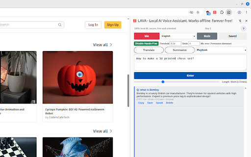
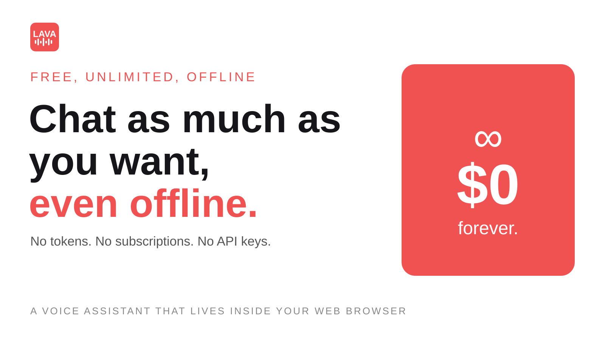
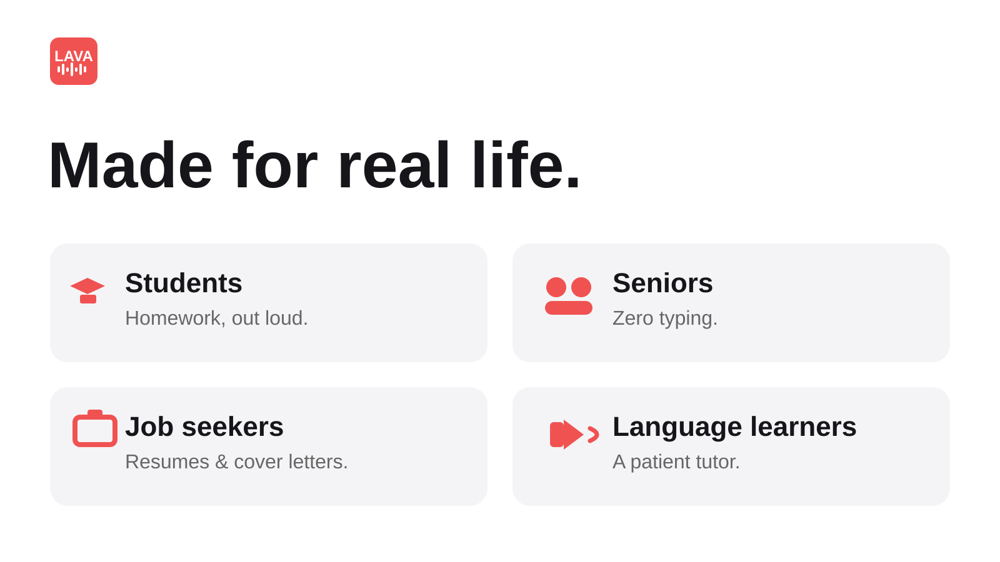
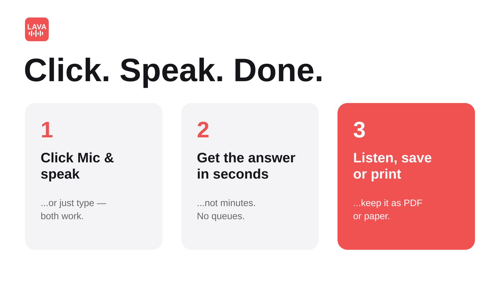
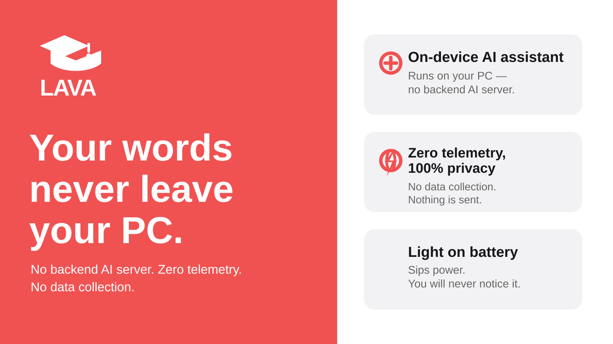
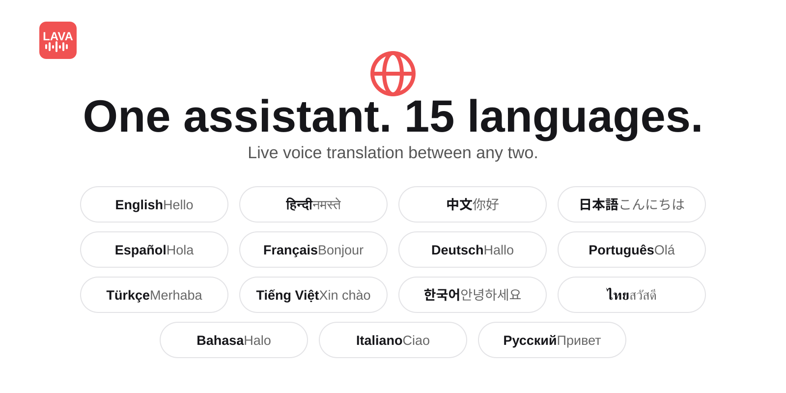

LAVA - Free offline Local AI Voice Assistant for Chrome, 100% local, private & on-device
Talk to AI locally in Chrome with built-in Gemini Nano AI. Say “Hey LAVA” and chat anything — unlimited conversations, homework help, resume building, cover letters, job-description-to-resume matching, multilingual translation in 15+ languages, even with no internet. No signup, no API keys, no tokens, free and unlimited.
- ★ 5.0
- $0 forever
- No signup
- Works offline
- Multilingual 15 languages
- 100% privacy
- Zero telemetry
- No API key
- No tokens
v1.3.1 · Updated Nov 9, 2026 · Desktop Chrome with built-in AI · mic + speaker, offline TTS, STT. · Press kit

- On-device powered by Gemini Nano
- Hey-LAVA wake word
- over 15 languages
AI access is built on data collection and privacy exploitation. LAVA changes that.
Cloud AI bills you monthly, token limits and train on your conversations, your uploaded private documents. LAVA flips that: the model lives on your device, so there is nothing to upload, nothing to bill, nothing to collect and nothing to leak.
“AI is one of the most profound things humanity is working on. It is more profound than fire or electricity.”
- Sundar Pichai, CEO of Google“Privacy is a fundamental human right.”
- Tim Cook, CEO of Apple“Saying you don't care about privacy because you have nothing to hide is like saying you don't care about free speech because you have nothing to say.”
- Edward SnowdenOn-device · Voice-first · Free unlimited
One extension: voice assistant, study tutor, writing coach, translator.
LAVA is a Local AI Voice Assistant for Chrome. Everything runs on-device with Chrome's built-in Gemini Nano — speech-to-text, text-to-speech, local — so it's private, fast even on low-end computers, and free with no token limits.
🎙️ Hey-LAVA hands-free
Say “Hey LAVA” and speak. Keep it in the background while you work- just like Alexa, but nothing leaves your PC.
📴 Fully offline AI
Chrome downloads the on-device model once, even after internet dies, LAVA still answers.
🌍 15 languages, spoken aloud
Speak in one language, hear the translation in another. Great for language practice.
📚 Study playbooks, homework help, exam preparation and quizzes
Simplify any topic, summarize anything on screen, control browser with voice, say "go to youtube play Top 10 2000s pop songs", build study notes, study guides, mnemonics, and quiz prep. Perfect for STEM homework read aloud all day long.
✍️ Writing help + talk to PDFs
LinkedIn posts, emails, essays, cover letters, resumes. Select text on any page or open a PDF and discuss it by voice.
🔒 Private by architecture
No backend AI server, zero telemetry, no data collection, no training on your chats. Light on battery, ram, built for potato computers.

Limitless · On-device · Free · No subscription
No tokens. No subscriptions. No API keys.
Typical paid-plan prices 2025–2026 — check providers. On-device ai has no token use bill.
Made for real life
Students. Seniors. Job seekers. Language learners.
Students: speak homework, get instant spoken answers, turn topics into notes + quizzes. Seniors & accessibility: talk instead of typing, hear every answer. Job seekers: tailor resumes and cover letters by voice. Travelers: offline translation with no roaming.

3 minutes, once
Click. Speak. Done. Works offline after that.

Install LAVA free
Add from the Chrome Web Store. No account, no API key. Let Chrome finish its one-time Gemini Nano model download.
Calibrate once
Adjust mic + speaker in device settings. Open Hands-Free mode in LAVA and press Calibrate for flawless speech recognition.
Talk three ways
Say “Hey LAVA”, click the mic and speak in 15 languages, or type and pick answer length. Save to PDF or print.
Honest comparison
Cloud AI vs. LAVA local AI.
Cloud models are massive. LAVA is local, private, offline, without token limit- built for everyday conversation, homework help, study notes, writing resume, cover letter, voice controlled web browsing, language learning.
| Cloud AI assistant like ChatGPT | LAVA on-device | |
|---|---|---|
| Internet needed? | Always | Only once (model download), then offline |
| Account / API key? | Yes | No account, no Signup |
| Cost and daily token limit? | ~$25/mo subscription / token caps | $0 unlimited, no token limits |
| Where do prompts, conversations go? | Vendor AI servers (logged per policy) | Stay on your device, cleared on delete cache/history |
| Multilingual voice support? | Varies, often paywalled | Built-in 15 language support, spoken aloud, and local free voices. |
| Best for? | Giant-model reasoning for anything and everything but with privacy concerns and daily limits. | Study, writing, translation, accessibility, daily unlimited Q&A, for kids, student laptops, jobseekers, seniors |
See it
Private, multilingual, in your browser.


Reviews · 5.0/5
Loved by first users.
“Really good extension. It’s simple and useful”
— nitu yadav · Chrome Web Store · Sep 2026“It’s simple, useful & works really well.”
— Dharti Mhatre · Chrome Web Store · Sep 2026Using LAVA? Leave a review — it helps free private AI reach more students, jobseekers and seniors.
Short answers
FAQ.
What is LAVA?
LAVA (Local AI Voice Assistant) is a free Chrome extension that runs AI on-device with Chrome built-in Gemini Nano, and full voice support. It answers by text and voice, calibrate mic and enable hands-free mode just say “Hey LAVA”, or just click the mic for simple voice use, or type using keyboard. Includes study playbooks, resume improvement help, translation, and talk-to-any-page.
Is my voice and data private?
Yes. Everything is processed on your device and stays on your own device, cleared by deleting browser history/cache. No backend AI server, zero telemetry, hence no data collection, no training on your chats. That is the whole point of on-device/local AI.
Does it work offline?
Yes. Chrome downloads the on-device model once (needs internet). After that, disconnect Wi-Fi — LAVA still answers, translates, and reads aloud.
Is it really free and unlimited?
Yes. No signup, no tokens, no subscriptions, no API keys. On-device inference has no server cost per question, so chat as much as you want, even offline.
How is LAVA different from ChatGPT, Gemini or Claude?
Cloud AIs run giant models on vendor servers: they need internet, accounts, and often subscriptions, and prompts leave your device. LAVA runs a compact model inside your browser: instant, private, offline, unlimited — ideal for study, writing, translation, and daily voice tasks.
What do I need to run it?
Desktop Chrome with built-in AI (Gemini Nano) on Windows, macOS, Linux or ChromeOS, plus a mic and speaker. Install LAVA, let the model download finish, open Hands-Free mode and press Calibrate once.
Which languages are supported? Is Hindi supported?
15 languages for voice + text with spoken read-back using OS voice packs. Yes — including Hindi, English, Spanish, French, German, Portuguese and more. Speak in one language, have LAVA translate and read back in another, or use it to practice.
What can I actually do with it?
Hands-free Q&A with “Hey LAVA” even in the background. Study playbooks that simplify topics and build quizzes. Writing help for posts, emails, essays, resumes. Select text on any page or open a PDF and talk about it. Save to PDF or print.
How do I talk to it?
Three ways: say “Hey LAVA” (hands-free), click the mic and speak in 15 languages, or type and choose answer length. All three give typed + spoken answers.
Does it work in airplane mode / with no Wi-Fi?
Yes, after the one-time model download. Students use it on flights, campuses, and rural classrooms with no connection.
Is LAVA safe for use?
Outputs are AI-generated locally on your device using Google Chrome's built-in Gemini Nano model, which LAVA does not provide, own, control, or warrant - LAVA only interfaces with it via Chrome's Built-in AI APIs, and such small on-device models can make mistakes for fact checking, hallucinate, or provide incomplete information and even error information, so you must verify important facts from authoritative sources and must not rely on LAVA for high stakes medical, legal, financial, mathematical, programming, or other professional advice or decisions, with LAVA/FIG providing the extension "as is" without warranties and, to the maximum extent permitted by law, accepting no liability for generated outputs or any actions taken based on them.
Why free? What’s the catch?
No catch. There is no cloud bill to pass on because inference happens on your device. FIG builds lightweight privacy first software; LAVA is free worldwide on the Chrome Web Store with more on-device features planned.